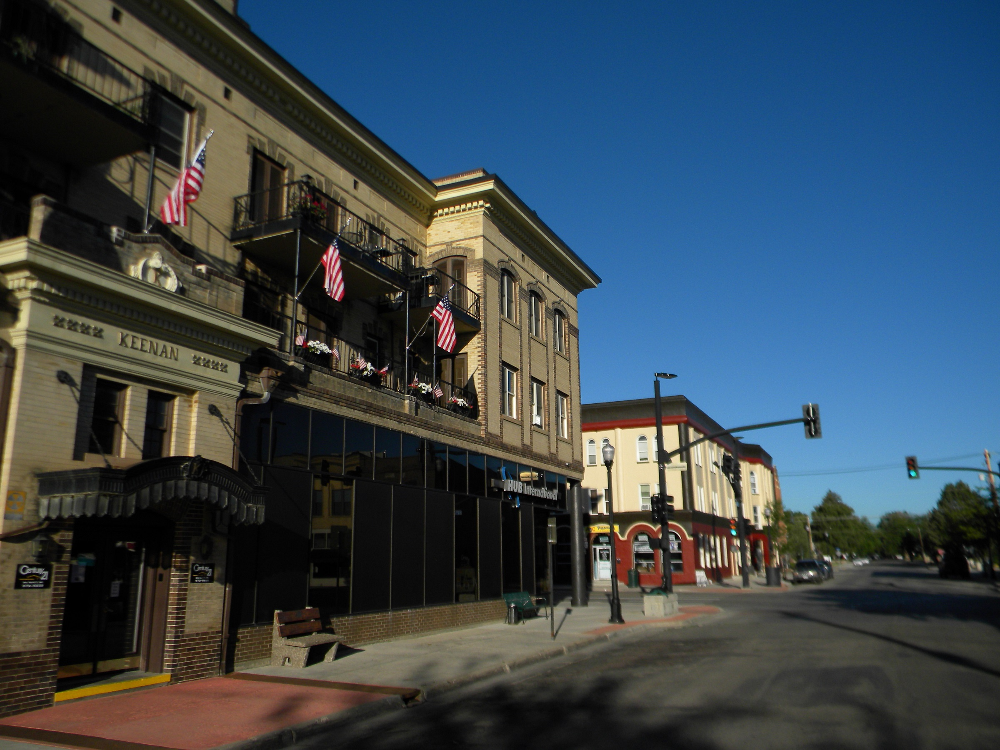

Sheridan, Wyoming
Where the Bighorns Meet Main Street — Wyoming's Premier Western Mountain Town

Overview
Sheridan sits at the base of the Bighorn Mountains, a town of ~20,000 with a historic Main Street, world-class fly fishing, and a polo tradition dating to the 1890s. The lifestyle is extraordinary: no income tax, low property taxes, abundant horse-friendly ranch land, top-5% public schools, and a deeply conservative community.
However, the faith infrastructure for Reformed families is thin: just one small PCA mission church, no OPC/EPC/CREC, and only a tiny classical school (~17 students). Families would need to be pioneers building community rather than joining an established ecosystem. For those willing, the setting -- Bighorn Mountains, world-class outdoor recreation, and genuine cowboy culture -- is deeply rewarding.
Scores
How Sheridan ranks across all six evaluation categories (1-10 scale). Weighted overall: 6.05 / 10.
Cost of Living
Overall index 104 -- just 4% above the national average, with no state income tax as a major advantage.
| Category | Index | Notes |
|---|---|---|
| Overall | 104 | 4% above national average |
| Housing | 110 | Moderate; affordable relative to mountain West |
| Transportation | 108 | Car-dependent, distances between towns |
| Groceries | 100 | Near national average |
| Utilities | 95 | Below national average |
No state income tax
State rate only, no local additions
Low; ~$2,080 on a $347K home
Wyoming's zero state income tax is a major financial advantage, particularly for high-earning remote workers. Combined with low property taxes (~0.6%) and a modest 4% sales tax with no local additions, the overall tax burden is among the lightest in the comparison set. The median household income of $78,348 is above the national median, reflecting a mix of energy sector, ranching, healthcare, and remote work. For families relocating from income-tax states, the savings can be substantial -- a household earning $150K saves $5,000-$10,000+ annually compared to states like Idaho, Kentucky, or the Carolinas.
Housing and Land
Median home price $347K -- affordable for the mountain West with excellent land and acreage availability.
Well below mountain West peers
Above national median
| Area | Price Range | Family Rating | Notes |
|---|---|---|---|
| Sheridan (in town) | $300K-$450K | Good | Walkable to Main Street, good public schools, established neighborhoods |
| Big Horn | $400K-$800K+ | Excellent | Historic ranching community, polo grounds, equestrian culture, Brinton Museum |
| South Sheridan / Ranchester | $250K-$400K | Good | More affordable, larger lots, small-town rural character |
| Rural Sheridan County | $200K-$500K+ | Good | Ranch properties with acreage, horse-ready, mountain views |
Land and Acreage
Sheridan County offers some of the best land value in the mountain West. Ranch properties with 5-40 acres are readily available, many already set up for horses with fencing, barns, and water. Wyoming's agricultural zoning is highly permissive -- livestock, horses, and agricultural use are the norm, not the exception. The surrounding landscape is a mix of irrigated hay meadows, rolling foothills, and mountain-front properties with views of the Bighorns.
For equestrian families, Sheridan is exceptional. The Big Horn Equestrian Center hosts events year-round, polo has been played in the area since the 1890s (one of the oldest polo traditions in America), and Eatons' Ranch -- the nation's oldest dude ranch -- is just outside town. Horse culture is not a niche hobby here; it is woven into the community's identity.
Education
Score: 5/10 -- Strong public schools, one tiny classical school, and Wyoming's permissive homeschool laws.
Classical Christian Schools
| School | Grades | Tuition | Students | Notes |
|---|---|---|---|---|
| Martin Luther Grammar / Immanuel Academy | K-8 | -- | ~17 | ACCS member. Tiny but committed. Lutheran classical. The only classical Christian option in Sheridan. |
Public Schools
| District | Rating | Notes |
|---|---|---|
| Sheridan County School District #2 | A / Top 5% | Consistently ranked among Wyoming's best. High graduation rates, strong college prep, small class sizes. |
Homeschool Community
Wyoming's homeschool laws are permissive -- parents must submit a curriculum to the local school district annually but face no standardized testing requirements and have broad freedom in curriculum choice. The homeschool community in Sheridan is present but small compared to larger metros. Classical Conversations has a presence in the broader Wyoming region.
| Organization | Type | Notes |
|---|---|---|
| Classical Conversations - Sheridan | Classical Christian | Community groups in the Sheridan area |
| Sheridan Area Homeschoolers | Support | Local co-op and support network for homeschool families |
Notable Mention
Sheridan's public schools are a genuine bright spot -- Sheridan County School District #2 is consistently ranked in the top 5% of Wyoming districts with strong academics, competitive athletics, and engaged parent communities. For families comfortable with public school, this partially offsets the limited private and classical options. The small classical school (~17 students) signals demand but is not yet at a scale that provides a full K-12 classical education pathway.
Faith
Score: 3/10 -- Very thin Reformed presence. One small PCA mission church, no OPC/EPC/CREC.
| Church | Denomination | Size | Notes |
|---|---|---|---|
| Sheridan Reformed Presbyterian | PCA | Small (mission) | Small mission church. The only Reformed option in Sheridan. |
The Reformed church presence in Sheridan is minimal. Sheridan Reformed Presbyterian (PCA) is a small mission congregation -- the only confessionally Reformed church in the area. There is no OPC, EPC, CREC, or other Reformed denomination represented. For families whose church life is central to their community, this is the most significant limitation of Sheridan as a relocation destination.
The broader Christian community is present through several evangelical and mainline Protestant churches, as well as Catholic parishes. Sheridan has a general cultural conservatism rooted in its ranching heritage, but it lacks the intentional faith-driven migration that characterizes places like Coeur d'Alene or Moscow. A Reformed family moving to Sheridan would be pioneers -- potentially helping to build something, but not plugging into an established Reformed ecosystem.
Lifestyle
Score: 9/10 -- Exceptional outdoor recreation, genuine Western culture, four seasons, and very low crime.
Climate
| Season | High | Low | Character |
|---|---|---|---|
| Spring | 55F | 30F | Cool, windy, gradual warming |
| Summer | 85F | 55F | Warm, dry, long daylight, low humidity |
| Fall | 58F | 32F | Crisp, golden cottonwoods, ideal riding season |
| Winter | 34F | 12F | Cold, snowy (~45 inches annually), real winter |
Real winters with mountain snow
Above national average
Base of the Bighorn Mountains
Outdoor Recreation
| Activity | Quality | Details |
|---|---|---|
| Fly Fishing | 5/5 | Tongue River, Bighorn River (world-class tailwater), North Fork. Premier trout fishing in the West. |
| Equestrian | 5/5 | Polo since 1890s, Big Horn Equestrian Center, Eatons' Ranch, abundant horse-friendly ranch land |
| Hiking | 5/5 | Bighorn National Forest (1.1M acres), Cloud Peak Wilderness, hundreds of miles of trails |
| Hunting | 5/5 | Elk, mule deer, whitetail, antelope, upland birds. Public land access outstanding. |
| Skiing | 3/5 | Antelope Butte (local, small), Big Sky and other Montana resorts ~3-4 hours |
Small-town safety, well below national avg
Historic Main Street, WYO Theater, Brinton Museum, King's Saddlery
Community
Score: 8/10 -- Deeply conservative, genuine Western community with strong civic engagement and family values.
County: 33,375
Above national median
Authentic cowboy culture
| Factor | Rating |
|---|---|
| Family Friendliness | Excellent |
| Homeschool Community | Present (small) |
| Conservative Presence | Very Strong |
| Small Town Feel | Genuine |
| Remote Work Friendly | Moderate |
Sheridan is an authentically Western community -- not a place that markets itself as Western, but one where ranching, rodeo, and horsemanship are living traditions. The town of ~20,000 has a historic Main Street with independent shops, the WYO Theater (a restored 1923 art deco movie house), King's Saddlery (a legendary Western gear maker), and a genuine "everybody knows everybody" culture. Wyoming's deep red politics (Trump won Sheridan County with 75%+ in 2024) reflect the community's conservative values without the culture-war intensity found in some migration-destination cities.
The community is tight-knit but welcoming. Unlike some fast-growing conservative destinations, Sheridan has not experienced massive influx-driven tension. Growth is steady but modest, preserving the town's character. Civic engagement is high -- school board meetings, county fair, rodeo week, and polo season all function as community gathering points. The Sheridan Community Land Trust, local hospital foundation, and active service clubs (Rotary, Kiwanis) reflect a culture of community investment.
The limitation is scale. At 20,000 people, Sheridan lacks the depth of community infrastructure found in larger cities. The homeschool community exists but is small. The Reformed church presence is minimal. Billings, Montana (the nearest city of any size at ~120,000) is 130 miles north. Families who thrive here will be those who value landscape, outdoor lifestyle, and genuine small-town character over institutional infrastructure.
Pros and Cons
Advantages
- No state income tax -- one of the best tax environments in the comparison set
- Exceptional equestrian culture: polo since 1890s, Eatons' Ranch, Big Horn Equestrian Center, horse-ready ranch properties
- World-class fly fishing on the Tongue River and nearby Bighorn River
- Median home price of $347K is affordable for the mountain West, with abundant land and acreage
- Bighorn National Forest (1.1M acres) provides outstanding hiking, hunting, and backcountry access
- Top-5% public schools in Wyoming partially offset limited private school options
- Authentic Western small-town character without the growth-driven tension of larger migration destinations
- 208 sunny days per year -- more sunshine than most mountain towns
Disadvantages
- Only one Reformed church (small PCA mission) -- no OPC, EPC, or CREC presence
- Only one tiny classical school (~17 students, ACCS member) -- not a full K-12 pathway
- Small population (20,046) limits community infrastructure, professional opportunities, and amenities
- Nearest city of any size (Billings, MT) is 130 miles away -- genuinely remote
- Cold winters with lows in the teens, ~45 inches of snow, and Wyoming wind
- Homeschool community exists but is small compared to larger metros
- Limited healthcare and specialist medical options for a town of this size
- Families must be pioneers in faith community -- building rather than joining an established ecosystem
External Links
| Resource | Link |
|---|---|
| City of Sheridan | sheridanwy.net |
| Sheridan County School District #2 | scsd2.com |
| Sheridan County Chamber of Commerce | sheridanwyomingchamber.org |
| Sheridan County | sheridancounty.com |
| Big Horn Equestrian Center | thebighornec.com |
| Bighorn National Forest | fs.usda.gov/bighorn |